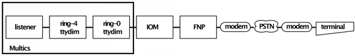
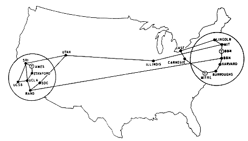
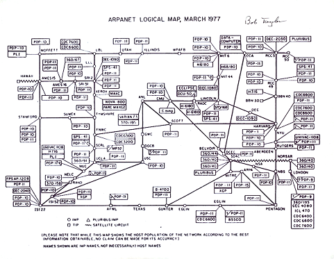
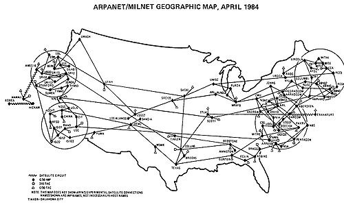
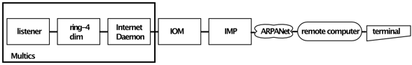

Loading
things to be fixed are marked XXX. Pick one and send mail.
Paragraphs by THVV unless noted.
This is a big subject. Originally I thought I would cover communications in one chapter and networking in another, but they are really intertwined. So for now they are together.
See the Home Terminals page for information on how users and system developers used terminals.
1. Communications
Calculators were accessed by phone lines back as far as the 1940s.
[DGRB]
Paul E. Ceruzzi's book Reckoners (a scanned version  is online)
says that the Bell Labs Model 1 (aka the Complex Relay Calculator, according to other sources) which began operation on Jan 8 1940 did I/O via:
is online)
says that the Bell Labs Model 1 (aka the Complex Relay Calculator, according to other sources) which began operation on Jan 8 1940 did I/O via:
Ordinary teletype with a modified keyboard. Teletype connected to processor by a multiple-wire bus; therefore remote operation was possible. Up to three teletypes were connected to the arithmetic unit; an interlock permitted only one to be active at a time.
Modems had been used to connect terminals over phone lines as part of the SAGE system in the 1950s. IBM's 1050 and 2741 terminals and 7750 communications processor were developed for airline reservations systems such as SABRE in the early 1960s.
1.1 Remote Terminals
Terminals were used to support interactive sessions, one per login session. We called these "typewriter terminals" to indicate that they had a keyboard and a printing mechanism, or "teletype terminals" even if they were not all made by Teletype corporation. (This is the source of the abbreviation "tty" for terminal devices in both Multics and Unix.) In the early 70s, some terminals with video displays, usually vector displays with characters produced by dot matrix hardware, were used.
We also called remote terminals "consoles" or "remote consoles," a usage that may have originated with CTSS.
1.1.1 CTSS
The prototype CTSS system at MIT in 1961 was accessed by directly connected Flexowriter terminals. By the mid 1960s, CTSS was accessed by remote terminals that dialed up using Bell 103A modems through the MIT Private Branch (telephone) Exchange (PBX). Many of MIT's terminals were IBM 2741 or IBM 1050 Selectric devices, with a few Model 33 and Model 35 Teletypes. CTSS supported two or three "high speed" lines using the Bell 202C6 modem at 1200 baud with a 30 baud reverse channel, used for terminals such as the ARDS. CTSS terminals were connected to an IBM 7750 Communications Processor; the protocol between the 7750 and 7094 was very simple. Some senior system programmers had terminals at home, connected to leased lines to the MIT PBX. A few off-campus users accessed CTSS via long-distance or tie-line calls. The CTSS system operator logged into a regular dialup terminal to perform some maintenance operations such as editing the Message of the Day; many operations were initiated by using the 7094 console keys.
1.1.2 645 Multics
The design of Multics began in 1965, as a cooperative project of MIT, Bell Labs, and General Electric, on the GE-645 computer. The system was self supporting for development use in 1967, and began service for paying customers at MIT in 1969.
The first terminals supported on Multics were Teletype Model 37s, because they were full ASCII terminals that didn't need character translation code in the supervisor. Multics typed its first words on a TTY37.
The Multics system operator logged into a terminal, initially an Model 37 Teletype in 1967, to issue system operator commands. By about 1972, system improvements allowed the use of the hardware maintenance typewriter console as a terminal for operator commands.
1.1.2.1 I/O Hardware
Multics followed the remote terminal connection scheme established by CTSS. On 645 Multics, I/O was handled by the Generalized I/O Controller (GIOC). The design of the GIOC is covered in the 1965 FJCC paper "Communications and Input/Output Switching in a Multiplex Computing System," by J. F. Ossanna, L. Mikus, and S. D. Dunten. Terminals were connected to the GIOC's terminal channels. MIT's GIOC had Teletype Adapters and Teletype Channels and something called Ext Char Groups. I think the 12 channels could handle 4 or 6 terminal lines each. For dial-out channels, we had a Dialing Adapter and some Dialing Channels, though I don't believe we ever had software to run them on the 645. High-speed channels were supported by Async Adapters connected to Async Channels or Sync Adapters connected to Sync Channels.
1.1.2.2 TTY DIM
I/O devices in Multics are managed by Device Interface Modules (DIMs), as described in the FJCC paper referenced above. Each user process connects its user_i/o stream to the ring-4 TTY DIM, which in turn connects to a channel provided by the ring-0 TTY DIM, which multiplexes hardcore buffers and manages communication with the 645's GIOC channels.
1.1.2.3 Answering Service
The Answering Service is the Multics system facility that owns all terminal channels and that assigns their usage to user processes.
This facility runs in the Initializer process created at system startup.
 User Control source.
User Control source.
1.1.2.4 Telecommunications Environment
In the later 60s, the MIT and BTL GE-645 Multics machines followed the same practice as CTSS had, of having a big pile of Bell 103A modems behind the machine, connected to the computer at one end and to a PBX "hunt group" at the other. For the MIT PBX, you dialed something like 7 for CTSS and 8 for Multics, and the PBX connected you to the first free modem. Callers from outside of MIT had to call the MIT switchboard and ask for a data connection. Most development users had IBM 2741 terminals in their MIT offices, and Model 37 TTYs at BTL. Some MIT, GE, and BTL Multics programmers had terminals at home, connected by leased lines to the office PBX.
It was also possible, for machine room terminals close to the mainframe, to employ a "modem eliminator" (also called a "null modem") and connect terminals directly. One could use a cable that "crossed over" several of the 9 active pins in the cable; distances longer than about 50 feet required a powered amplifier.
In the early 1970s, Honeywell developed a new machine, the Level 64, in Paris. The French developers initially used the Honeywell BCO Multics machine in Billerica MA via a 1200 baud phone line to Paris, supporting up to 5 TTY-37s, until the Paris 645 Multics came up. Bootstrap card decks were punched in Billerica and air expressed to Paris daily.
1.1.3 6180 Multics
A new hardware generation to replace the GE-645 for Multics was begun by Honeywell in 1970, called the 6180. This hardware platform provided enhanced support for Multics. The first 6180s were placed in service in 1972.

Figure 1. Connection between a Multics user's listener and terminal.
1.1.3.1 I/O Hardware
In the initial configuration of 6180 Multics, the I/O controller was a Honeywell Input-Output Multiplexer (IOM), which was connected to one or more DataNet 355 front-end processors. In later years the DN355 was followed by a series of DN6600 communications processors (based on the Level 6 mini) and then a device called the 18x. The IOMs and the front-end processors did not have Multics-specific hardware modifications.
1.1.3.2 Multics Communications Software (MCS)
[RBS] Doug Wells and I wrote the original DN355 code for Multics. It was a large modification of the DN355 code done in Phoenix for GCOS. Our version simulated the GIOC so we could run Multics with either a GIOC or DN355 for communications or both. I did all the slow speed terminal stuff except for the ARDS which was done by Doug. Most of the debugging of the code was done using a DN355 simulator done in Phoenix by the HW group and a lot of PL/I code of mine so we could run almost all of the DN355 stuff in the comfort of a terminal room. The final debugging was done in about a month of 3rd shift work as I recall. During 3rd shift debugging I can remember sharing an office with Noel Morris and Bob Mabee while working at night. (Bob always had his radio tuned so a MUZAK type station that played elevator music all night long). Mike Grady was the project leader for the rewrite when the GIOC was retired.
[MJG] Dick Snyder was really the architect of the replacement of the GIOC emulation on the DN355, later to be called MCS. I recall many long days of design sessions with Dick and Robert at CISL. The main feature of the redesign was the creation of a "device state transition language" which was an interpreted language that was generated via the assembler macro language. Opcodes included action verbs and "wait" verbs that were used to manage the device sessions. Each supported device had a "PC" (current location in the tables) and some local storage which could be referenced.
[MJG]
Tools were always a big problem on the project.
As I recall, early work used an assembler and linker that run on a DN355 Simulator that ran in the GCOS simulator.
Talk about slow.
Larry Johnson (I think) wrote a  native macro assembler,
and then later (after many, many wasted hours) the language guys (Paul Green?) wrote a native Multics linker, and life became more tolerable for developers.
native macro assembler,
and then later (after many, many wasted hours) the language guys (Paul Green?) wrote a native Multics linker, and life became more tolerable for developers.
[MJG]
The DN355 had three primary hardware interface modules:
the High Speed Line Adapter (HSLA),
the Low Speed Line Adapter (LSLA),
and the connector to the the IOM channel adapter (DIA).
As I recall, we used the module that transported data to the IOM pretty much intact, especially since we already had a ring-0 DIM for it.
 hardcore DN355 code.
The DN355 "OS" had a pretty simple, non-preemptive scheduler, and at one point (during the USGS benchmark)
I tweaked the priorities to keep data flowing over the IOM channel.
hardcore DN355 code.
The DN355 "OS" had a pretty simple, non-preemptive scheduler, and at one point (during the USGS benchmark)
I tweaked the priorities to keep data flowing over the IOM channel.
[MJG] I wrote the new HSLA module, while Robert Coren wrote the LSLA module. We were both trying to run the same state machine, and implement the same opcodes, so there was a lot of discussion about the best way to do things, but since the hardware was so different, the implementations turned out very different.
[MJG] Over time, many people made changes to the pseudo-language, adding extensions for synchronous communications protocols, and for other strange devices like the VIP 7700 terminals. Certainly, Larry Johnson played a big part in the enhancement and completion of MCS over the years. As I recall, the first person I had to teach the pseudo-language to was Bob Adsit, from Phoenix. I forget what device Bob was trying to support...
[MJG] I left the project in the fall of 1976, shortly after it was released. When I re-joined the Multics project in 1978, I was not directly involved in MCS.
[MTB-607 Problems with MCS (1983-01-26)] In 1983, the MCS code for DN355 contained about 40,000 lines of 355MAP code.
Protocol between mainframe and FNP
[CA] I can't speak from a historical perspective, but I can comment on the code-in-place. For the DN355 family of FNPs, the mainframe/FNP communications is through a memory mailbox plus two signals. The mainframe places a message in the mailbox, sets up an "interrupt FNP" channel command and signals the FNP with an I/O connect (CIOC instruction); the FNP places a message in the mailbox and signals the mainframe with an interrupt. (There is also a "bootload" channel command to allow the mainframe to pass the FNP its executable code image.)
Each FNP is configured to use one of eight mailbox addresses; Multics assigns the names A to H to the FNPs depending on the configured address. The mailboxes are 184 words long. An eight-word header, eight eight-word mainframe to FNP mailboxes and four twentyeight-word FNP to mainframe mailboxes.
The mainframe messages consist of placing a command in the header which specifies:
- A message is in a mainframe mailbox, and the number of the mailbox, or
- A message in a FNP mailbox has been updated, and the number of the mailbox, or
- The mainframe is done with an FNP mailbox message, and the number of the mailbox.
Example mainframe mailbox commands are:
- Write Control Data
- Disconnect Line
- Accept Calls
- Dial Out
- Alter Parameters
- Full Duplex
- Breakall
- Input Flow Control
- Output Flow Control
- Write Text
- Read Control Data
Example FNP mailbox commands are:
- Accept Input
- Line Break
- Accept New Terminal
- Line Disconnected
- Send Output
1.1.3.3 Telecommunications Environment
Telecommunications for 6180 Multics development was initially dominated by dialup over low-speed modems. MIT's PBX was used for access to the 6180 and the 645. CISL used a very large ancient PBX in a back room that used stepping relays to accomplish the hunt function. CISL also had a Tymnet multiplexer in the room, which connected terminal lines on the CISL PBX (including home terminal lines) to System M in Phoenix without using the more costly Honeywell Voice Network.
1.1.4 TTY DIM
A Multics user process connects to a "terminal DIM" or "outer module" in the user ring that provides read, write, and control calls, using the standard stream-oriented I/O system. If the user attempts to read and there is no data, the user process blocks. For standard user processes, the tty_ outer module connected the user process to the terminal, and passed characters through from ring 0. The tty_ DIM sets up a connection with the ring-0 TTY DIM, which is not an iox_ module, and makes calls like hcs_$xxx? to read and write data.
 Info segment for tty_ outer module.
Info segment for tty_ outer module.
The  ring-0 TTY DIM
is responsible for management of I/O buffers in flight between the user process and the FNP.
The ring-0 DIM also implements terminal modes such as replay, polite, echo, etc., character set translation such as EBCDIC to ASCII,
and terminal type adaptation such as correct insertion of delays, shift codes, etc.
ring-0 TTY DIM
is responsible for management of I/O buffers in flight between the user process and the FNP.
The ring-0 DIM also implements terminal modes such as replay, polite, echo, etc., character set translation such as EBCDIC to ASCII,
and terminal type adaptation such as correct insertion of delays, shift codes, etc.
XXX Echoing, line orientation, breakall mode, echo negotiation, QUIT signal.
Terminal modes supported by the TTY DIM were:
| lln | line length n. caused a line wrap after n output chars. |
| pln | page length n. caused a pause on output after n lines until user hit a key. |
| can_type=key | canonicalize with overstrike or replace |
| edited | suppress printing chars if there is no defined representation. |
| tabs | use tabs on output. Tabs assumed to be set every 10. |
| can | canonicalize output. |
| esc | process escape sequences on input. |
| erkl | process erase and kill on input. |
| rawi | raw input. |
| rawo | raw output. |
| red | use red shift on output. |
| vertsp | device is capable of doing formfeeds and vertical tabs: use them on output instead of escaping. |
| crecho | echo CR if LF is input. |
| lfecho | echo LF if CR is input. |
| tabecho | echo tabs as spaces. |
| hndlquit | handle QUIT signals. |
| fulldpx | full-duplex transmission. |
| echoplex | echo characters typed at keyboard. |
| capo | translate output to all caps. |
| replay | if input line is interrupted by output, replay input line. |
| polite | delay interrupting input with output if partial line is typed. |
| ctl_char | Controlled whether (for example) SOH was printed as \001 or ^A. |
| blk_xfer | for using forms-capable terminals in forms mode. must do set_framing_chars order also. |
| breakall | wake mainframe on every character. |
| scroll | check for end of page on video terminals. |
| prefixnl | if input is interrupted by output, send a newline first. |
| wake_tbl | wake the mainframe for the specified characters in the table. |
| iflow | input flow control. |
| oflow | output flow control. |
| no_outp | do not send parity on output. HSLA only. |
| 8bit | receive 8-bit characters. HSLA only. |
| oddp | send odd parity. HSLA only. |
 Info segment for set_tty (stty).
Info segment for set_tty (stty).
 Info segment for terminal modes as of 1982.
Info segment for terminal modes as of 1982.
 1983 info segment for new TTY mode that allows overstriking canonicalization for video terminals.
1983 info segment for new TTY mode that allows overstriking canonicalization for video terminals.
1.1.4.1 Ring 0 Multiplexers
[MTB-607] "The ring-zero multiplexers provide a framework within the Multics supervisor for implementing multiplexed communications protocols. They were created when the need for support for such protocols became clear. Adding support for multiplexed protocols to the FNP was considered impossible without a complete redesign. Within this framework, support currently exists for the IBM 3270 (BSC version), VIP 77XX, X.25 level 3, and HASP protocols. The framework is also used to support communication with the FNP itself and for the software terminal facility. This code largely runs in a ring-zero masked and wired environment. It consists of about 25000 lines of PL/I and a small amount of ALM."
1.1.5 Features
A key concept in the Multics terminal I/O design is that of canonical form. The idea is that if you type abc, 3 backspaces, and 3 underscores, or if you type a, backspace, underscore, b, backspace, underscore, b, backspace, underscore, the string read into your program is the same: overstrikes are sorted into "canonical" order. See the 1970 SJCC paper "Remote terminal character stream processing in Multics" by Saltzer and Ossanna for the theory.
Initially, Multics adopted the erase and kill characters used by TYPSET on CTSS: typing # would erase itself and the preceding character; typing @ would erase itself and all the characters to the left. (See below for the interaction with Internet mail addresses.) When video terminals came along, overstrikes could not be displayed, and these terminals were often used with the erase character set to backspace. (See the discussion of modes and set_tty above.)
[GCD] Because of the unreliability of data phone/modem connections during the 1970s, Multics preserved process information if the phone connection dropped without a formal logout operation by the user. Upon a subsequent reconnection to the system, the login listener allowed the user to reconnect to the suspended process, or to destroy that process and connect to a fresh process.
 Info segment for login (l), showing options for reconnecting..
Info segment for login (l), showing options for reconnecting..
[GCD] Multics also had facilities for redirecting user input from the terminal to a pre-defined file (this may have been a private tool, since I don't find it documented in the Multics Commands and Active Functions Manual); and for redirecting user output from the terminal to a file (via file_output command). Output redirection could be done while the program was executing, by: interrupting program execution; running the file_output command; restarting the program via start -no_restore command.
 Info segment for file_output (fo).
Info segment for file_output (fo).
[GCD] There was also some way to restart operation, with input/output directed to files, and then disconnect the terminal while the process continued running. This converted an interactive process to an absentee (background) job.
1.1.6 Other ring 4 terminal I/O modules
The Initializer process attached its input and output to an outer module, oc_, that could read and write the hardware operator console. When the Message Coordinator was introduced, I/O within the daemons and Initializer was generalized: these processes attached to virtual terminals whose input and output were routed among a number of physical terminals.
When the ARPANet connection was introduced, user processes were attached to a different outer module, ntty_, that connected process input and output to the network. See below.
1.2 File Transfer
As soon as we had more than one computer, we needed ways to move files between them. Punched cards were quickly superseded by tape, and then by data communications.
1.2.1 Inter-CTSS CARRY Facility
In the mid 1960s, there were two CTSS systems, one at MIT Computation Center in Building 26, and one across the street at MIT Project MAC in Technology Square. Entering a carry request with the CARRY command left a note in your directory, and the disk editor, which did background printing, would search the whole file system for carry requests and write a carry tape with the files to be carried. The carry tape was carried across the street and input to the other CTSS. This only worked for users that had accounts on both machines with identical problem and programmer numbers.
1.2.2 MRGEDT, 636TAP, and IMCV and the 7711
The BTL people had accounts on the Project MAC CTSS machine, just like the rest of the developers. They could log in to CTSS over long distance phones and write EPL programs and compile them, just as conveniently as we could in Cambridge. They could also run the MRGEDT (Merge Editor) command to create a GE batch tape on a dedicated tape drive on the 7094, and by using a special name for the tape, signal operations that the tape should be sent to Murray Hill with a device called the IBM 7711, which was two tape drives linked by a phone line. The Murray Hill copy was input through the IMCV (Input Media Conversion) command to GECOS on their 645, running the 645 simulator; when the job ended, the Murray Hill operator took the output tape, with its core dump, and transmitted it back to Cambridge for input to CTSS, so that the BTL users could use CTSS debugging tools.
1.2.3 Inter-Multics tape carries
The carry facility was the Multics analogue of CTSS CARRY. It operated between MIT Multics, the CISL development machine(?) and Honeywell System M in Phoenix. Tapes were sent daily to and from Phoenix by air express during the 1970s.
[WOS] It was a real queue-driven service, complete with enter_carry_request, etc. It was also one of the most bug-infested pieces of software I can remember. I particularly remember a problem report from Chris Tavares titled "Timmy, I think Lassie's trying to tell us something", reporting an e-mail from the Carry daemon that consisted of a filename and several hundred NULs.
 Info segment for enter_carry_request command.
Info segment for enter_carry_request command.
 Info segment for carry_load command used by operator to load a carry tape.
Info segment for carry_load command used by operator to load a carry tape.
1.2.4 Inter-Multics File Transfer
IMFT was a facility for transferring files between CISL in Cambridge and System M in Phoenix. It was written in the early 1980s.
[GCD] Rich Fawcett wrote the IMFT facility. It did run via X.25, and used private algorithms for capturing file attributes and for compressing file data.
[WOS] IMFT ran over the HASP protocol on synchronous lines. I suppose they could have been dialup, but mostly they were leased. It, too, was trouble-prone, although not as badly, probably because of its dependence on the ancient backup/reload code with all its static variables.
[Rick Kovalcik] I'm pretty sure this was over X.25 at least in the early 80s. [Beattie, Palter]
 Info segment for enter_imft_request command.
Info segment for enter_imft_request command.
1.3 RJE
[DRV] In the early 70s, Remote Job Entry RJE was supported over dedicated synchronous phone lines using Binary Synchronous Communication (BSC) protocols for IBM 2780, IBM 3780, Honeywell G115 and HASP. The G115 terminal was a Honeywell Level 6.
Modems used for this communication initially were Bell 201C at 2400 baud. Later, we added support for various European modems and I think Bell 212A.
Later RJE used the HDLC layer of X.25, and this mode was used to support mail networking such at BITNET (see below).
1.4 Other Communications
There were a few early experiments with having a computer "pretend" to be a (dumb) terminal.
The Answering Service supports commands to connect multiple terminal channels to a single process. One command is dial, which allows a terminal to be attached to a logged in process. The slave command causes a terminal to be placed in a free state such that a process can attach it.
 Info segment for dial, slave, etc. commands.
Info segment for dial, slave, etc. commands.
Other channels such as high speed lines are managed by the Resource Control Package, which provides an access control list per channel.
[GCD] Dial-in and dial-out lines were managed through the Answering Service dial_manager_call facility, which set terminal I/O channel characteristics, and defined server attachment to specific input comm channels.
[GCD] The user interface for connecting to remote systems was the dial_out command, which permitted connection to remote Multics (or other) systems, capturing of data received from remote system in a file, transmitting of canned data from a file to the remote system, etc. This facility essentially performed telnet-like connections to a remote system, with commands to capture output from the remote system, and to send one or many commands (and input data) to the remote system.
 Info segment for dial_out command.
Info segment for dial_out command.
2. ARPANet
Computer networking is often attributed to J.C.R. Licklider,
who was the first head of Information Processing Techniques research at ARPA in the early 1960s.
Larry Roberts at ARPA published a plan for the ARPANet in 1967, and the program was funded in 1968 and an initial network up and running by 1969.
Licklider left ARPA and became Director of Project MAC in 1969, and started a Networking group which worked on connecting Project MAC's machines,
including Multics, to the ARPA Network.
There is a 1972 ARPA movie online titled  Computer Networks: The Heralds of Resource Sharing
featuring Lick, Corby, Larry Roberts, and others.
Computer Networks: The Heralds of Resource Sharing
featuring Lick, Corby, Larry Roberts, and others.

ARPANet Logical Map, 1970. Click for a larger view.
[MAP] The networking group at Project MAC, a loose coalition of people from Multics, Dynamic Modeling, and AI/ITS, initially led by Licklider, made many contributions to the basic ideas of the ARPANet. An rough idea of what went on can be gleaned from the early "RFCs" (Requests for Comments, effectively the ARPANet's design documents).
[MAP] Multicians actively participated in the design of "all" the protocols (except the IMP-IMP protocols, since the "Interfaith Message Processor", as Sen. Kennedy famously miscalled it in a telegram congratulating BBN on being awarded the contract for the ARPANet's communications subnetwork [unless, of course, the telegram -- a copy of which was posted on the 5th Floor bulletin board -- was a hack] belonged to BBN, both IMP-IMP and Host-IMP Protocolswise), the Host-Host Protocol (usually miscalled "NCP"), Telnet, and FTP in particular, as well as less well-known protocols such as Graphics, Remote Procedure Call, RJE, and the Host-Front End Protocol (the particular pride and joy of Mike Padlipsky, who took over as Multics Networking/Graphics Group leader when Tom Skinner left). Skinner, Meyer, Kanodia, and Padlipsky were all involved in the early phases. Pogran and Wells came along later and also contributed. And as will be seen below, Dave Clark played a major role in the development of TCP/IP.
[MAP] The ARPANet consisted of "Host" computers running diverse operating systems connected via a comm subnet (of IMPs) in order to do resource sharing. The individual Host types connected physically to the IMPs via specially designed interfaces, for which they were responsible (although of course other instances around the 'Net of the same type Host almost always all used the same special interface design); the specs for the IMP interface and for the Host-IMP Protocol were within the purview of the BBN contract, which caused some problems when, for example, BBN advertised the IMP would offer half-duplex ports, Multics, wanting to conserve GIOC channels, took them up on it, and then BBN moved the goalpost, as it were ... but that's all damns over the water.
2.1 Hardware Connection
2.1.1 GIMPSPIF
GIMPSPIF (GIOC to IMP Special Interface) on the GE 645. Abhay Bhushan's thesis project connected GIOC to IMP.
2.1.2 ABSI
ABSI (Asynchronous Bit Serial Interface) on Honeywell 6180. Designed by Rick Gumpertz for his MIT undergraduate thesis, connected IOM to IMP. Several more were made by an MIT RLE technician. MIT had one, CISL had one, RADC had one, who else?
 Documentation for the ABSI has been preserved by Jerry Saltzer.
Scan 2, Scan 3, and Scan 6 are versions of a Functional Specification. Scan 2 has the latest date.
There are some handwritten notes.
Documentation for the ABSI has been preserved by Jerry Saltzer.
Scan 2, Scan 3, and Scan 6 are versions of a Functional Specification. Scan 2 has the latest date.
There are some handwritten notes.
[KTP] Because 1822 communication HAD to be full duplex (despite the original BBN spec allowing half-duplex operation) to avoid a deadly embrace in the IMP software, ABSI required separate PSIA channels for receiving and transmitting, designated by IMPR and IMPW cards in the config deck. This was unfortunate, as the PSIA was a complex (and expensive!) high-performance half-duplex I/O channel. (The original IMP interface for the 645, designed by Abhay Bhushan, used a single half-duplex common peripheral channel and was subject to the deadly embrace. AFAIK, Bhushan's was the only half duplex ARPANET host interface ever built.)
[KTP] I don't believe MIT built every ABSI. If I remember correctly, MIT gave the documentation for the ABSI to Honeywell so that they could build their own interfaces for the systems at CISL and, later, in Phoenix.
[MAP] (The DoD really should have used ABSIs for connecting their 6080s to the ARPANet-like AUTODIN 2 network, but instead wound up paying Honeywell some 25 times more than the ABSI cost for an allegedly militarized interface, the name of which isn't worth unearthing since the statute of limitations must be long since expired.)
The diagnostic program for the ABSI was a BOS program called ZWERG written at CISL.
ABSI hardware
[RHG] As I recall, the CPC could only transfer 6-bit characters. The PSIA was a more expensive interface, but could handle full 36-bit words. Indeed, because it was half-duplex, we needed two PSIAs.
[RHG] One of the more arcane design requirements for the ABSI was based on BBN 1822 and the wide variety of word sizes used by computers on the Arpanet. In particular, the ABSI could transfer "words" of anywhere from 1 to 36 bits each, appropriately placing and zero-padding them in Multics' 36-bit words. To the best of my knowledge, varying "word" sizes were never really used. The network very quickly settled upon 8-bit bytes as the lingua franca of transmission.
[RHG] Although it may have been an expensive channel, the PSIA actually presented a fairly simple interface to the connected device (in this case, the ABSI). In fact, it was simple enough that I built a PSIA simulator in a small metal box for use during ABSI development. The simulator could, under manual control using toggle switches, initiate transfers to/from the ABSI and display results via LEDs. When connected to the IOM, I could also initiate transfers via a large control panel on the IOM that had lots of switches, buttons, and blinkenlights. That was used for my second level of testing. My testing using the PSIA simulator and the IOM test panel had pretty thoroughly shaken down the hardware by the time Doug Wells did the driver software; I don't think he encountered any hardware issues when building his code.
[RHG] The original ABSI was built on the standard 200-chip board used by Honeywell. It was based on Sylvania SUHL II series TTL chips scavenged from other Honeywell boards. Even the board itself was scavenged: I spent hours removing old wire-wrap before I could start wrapping my design. (I still have some spare boards.) The ABSI's schematics also used the arcane signal-naming conventions chosen by Honeywell. This was all done so that the ABSI could be easily integrated into Honeywell's production and maintenance procedures. I don't think that ever happened.
[RHG] The ABSI sat physically inside the IOM only for convenience: it drew power (and cooling air, I suppose) and nothing else from the IOM backplane. The ABSI connected to the two PSIAs channels via a cable (or was it two cables?) that attached to the ABSI's front edge connector. The cable to the IMP attached to the other front edge connector. The ABSI could automatically switch between the Distant Host Interface and the Local Host Interface based upon the cabling configuration.
[RHG] A later MIT implementation used Texas Instruments 7400 series TTL, functionally similar but with different pin-outs. The most significant logic change to the logic was that pulses were generated using monostable multivibrators (a.k.a. one-shots) instead of the delay-lines that Honeywell was so fond of. I believe that this version was contained in a separate box instead of being housed inside the IOM.
2.1.3 IMPs and TIPs
The initial connection of 645 Multics to the ARPANet was as host 0 on IMP 6, located in the Tech Square machine room on the ninth floor, in Sep 1971. [RFC 0208] This IMP served not only the GE-645, but also the AI and Dynamic Modeling groups on the same floor.
[CDT] About a year later, the Mathlab machine was added to IMP 6 as #306.
RFC 208 says that RADC was assigned to ARPANet IMP #18 as host 0 as of 10/5/71, but apparently RADC-Multics was not actually connected to the ARPANet until 1974.
[KTP] I think that it was late '72 or sometime in '73 (possibly as late as '74) that Edwin Meyer and (I believe) Tom Skinner at MIT found and fixed all the places in the 645 Multics ARPANET code that hard-coded Multics' ARPANET address with the original MIT-MULTICS value of "6" and converted them to references to a parameter that was read in as part of the IMP card in the BOS config deck. (Ed found all the places but one, where someone had coded 110b, which we didn't find until live testing). We did this because MIT was getting a second ARPANET node, and we knew the address needed to be configurable. This also would have been a prerequisite for bringing up RADC-MULTICS.
[KTP] When the 6180 was installed in Bldg. 39, we were graced with ARPANET IMP 44 in Bldg. 39. The new Multics was to be the only host on that IMP, so it was Host 0 on IMP 44, or 0/44, or, simply, "host 44."
[KTP] Later, MIT and DARPA decided that MIT should have an ARPANET TIP (Terminal Interface Processor), and that the way to accomplish this was to convert IMP 44 into a TIP. Unfortunately, the place where the TIP's terminal ports were needed was at 545 Tech Square, and so IMP 44 was moved to 545 TS and converted to a TIP. The 6180 in Bldg. 39 was connected to the ARPANET IMP at 545 Tech Square via an 1822 "Distant Host" interface running over a nearly 2000' long cable MIT had pulled through conduits between the two buildings. The conduit crossed above the MBTA Red Line tunnel that ran down Main St. At first, the ARPANET connection was occasionally disrupted when an MBTA train went by, due to electrical problems induced by the MBTA trains (in EE terms it was an issue with insufficient Common Mode Rejection in the ICs used for the differential receivers in the ABSI).
[KTP] An old ARPANET guy dug up some ARPANET traffic statistics from '72-'73 and determined that there was no traffic from ARPANET host 0/18, assigned to RADC-MULTICS through December of 1973 (the latest report he could get get his hands on). So, even though the ARPANET node itself was installed in the fall of 1971, only the Terminal Interface Processor (TIP) host showed any traffic in 1972-1973. Which puts the RADC-MULTICS turn-up on the ARPANET into 1974 at the earliest.
2.2 Software
[MAP] RFC's show that the low-level protocols (especially Host-Host, and what turned out to be Old Telnet) were being debated and changed actively in 1970 and 1971 (for example, RFC 0072 Proposed Moratorium on Changes to Network Protocol. R.D. Bressler. Sep-28-1970), and that the Multics implementation code was being done during that time.
[MAP] (More light on the early protocols can be found in Mike Padlipsky's book, The Elements of Networking Style and Other Essays and Animadversions on the Art of Intercomputer Networking, "the World's Only Known Constructively Snotty Computer Science Book". It's somewhere between interesting and amusing that he chose the title as a play on Brian Kernighan's best-seller, The Elements of Programming Style, because he remembered that when Brian was working on Multics during his student days, before heading to Bell Labs -- as did one Dennis Ritchie -- he'd mentioned that programs should be edited for style just as the MSPM sections should in Brian's hearing, and Brian had perceptibly brightened at the new-to-him insight, so it was only fair....)
[CDT] I'm not sure whether it was Padlipsky or Meyer who was responsible for "the World's Most Useless Subroutine Documentation." It was for a networking entrypoint named ncp_$croggle_socket. The subroutine description said simply, "This entrypoint croggles an NCP socket." End of writeup.
2.2.1 NCP
[WOS] The original ARPANet code (the IMP DIM and friends, collectively known as the NCP implementation) was mostly a ring zero contraption. In 1978 or so, Bernie Greenberg had to do major surgery on it to change from 8-bit to 32-bit NCP host addresses.
[KTP] The Network Control Program daemon originally ran in Ring 1 on the 645, resulting in incredible amounts of overhead and $ charges to the ARPANET group for running the NCP. This stemmed from the fact that the ARPANET was considered a research project at the time and not part of the System. Later, as the ARPANET became more accepted, execution of the NCP daemon functions was moved into Ring 0, and the greatest consumer of daemon resources in the NCP, the handling of ALLOC (data space allocation) messages, was done at interrupt time in the IMP DIM (in a violation of what would later be understood as strict protocol layering, but, heck, it saved $$ AND improved performance).
[KTP] Just as Multics tty's were labeled tty001 tty002 etc., the ARPANET pseudo-tty's were labeled net001 net002 etc.
2.2.2 FTP
[KTP] I wrote the first FTP Server for Multics not long after I became a full-time staff member at MIT LCS in the fall of 1972. This surely would have been one of the first half dozen (or so) FTP Servers ever written.
[KTP] I wrote the first ftp_process_overseer_ as part of the first FTP Server. A user logging in over FTP (vs. Telnet) had his process started using the process overseer ftp_process_overseer_, and was restricted to the environment of the FTP command set. In keeping with Multics security principles of the time, the user HAD to log in; there was no anonymous login, such as was implemented (I believe) on BBN Tenex and, of course, later on UNIX. This wasn't too bad for FTP, as most ARPANET users who wanted to send files to or from Multics were, in fact, Multics users. However, since email was part of the FTP of the day, it created an issue, since what user did you log in to send email? On other ARPANET hosts, email and FTP in general were handled by the equivalent of system daemon processes. Our solution was to advertise the well known user and password NETML (for "net mail"). Other ARPANET hosts wrote their mailer software to log in with USER NETML and PASS NETML if either they KNEW they were connecting to MIT-Multics OR if the attempt to send email without logging in was rejected (different approaches implemented by different hosts). If I remember correctly, this user got a specific process_overseer_ variant that restricted the user to the email sending commands.
2.2.3 MAIL
XXX See another section on mail below, should combine and unify.
[KTP] Do folks remember that @ was the Multics line-kill character? We were opposed to Ray Tomlinson's famous (or is it infamous?) selection of @ as the character that separated the user name from the host name in email addresses. Early versions of ARPANET email specs allowed the use of space-a-t-space (i.e., " at ") in place of the @ to accommodate Multics (and the mail composition software I wrote used the syntax -at on the command line; i.e., netmail Pogran.CompNet -at mit-multics to begin composing an email to be sent to Pogran.CompNet at the ARPANET host mit-multics.)
[MAP] For a different perspective on the origins of "e-mail", as it's now called, and on the invention of the user NETML/pass NETML trick, see MAP's "And They Argued All Night...", and RFC 491. I also have a completely clear memory that I wrote the original Multics "netmail" command, abbreviated "nml", "-at"'s and all, while I was still the Networking and Graphics Group's leader.
[KTP] With the popularity of instant messaging today, it's interesting to note that the BBN TENEX folks implemented a "talk" capability for the ARPANET that was very much like the within-a-single-system capability TENEX had for a user to "write" to another user's tty. BBN extended this to enable a user on one TENEX system to "talk" to a user on another TENEX system on the Net. Not to be outdone (and since BBN made the protocol spec available) I implemented a net_talk command on Multics. So, the answer to the question "When did I first use instant messaging on the net?" is probably "1974."
XXX mail addresses and what they looked like; gateways
2.2.4 Logger
First described in an RFC by Meyer and Skinner.
[RFC 98] "The term "logger" has been commonly used to indicate the basic mechanism to gain access (to "login") to a system from a console. A network logger is intended to specify how the existing logger of a network host is to interface to the network so as to permit a login from a console attached to another host."
2.2.5 Telnet
Telnet was the protocol to open a "network virtual terminal" on another system. It was also used for other program-to-program communication. Many RFCs describe the evolution of the Telnet protocol: RFC 137, dated 1971, is one of the earliest. Ed Meyer contributed to the development of the protocol and the Multics implementation.
Role in development of EMACS
In 1977 Eugene Ciccarelli developed a Multics input line editor that used ARPANET connection. In 1978, Greenberg developed Multics EMACS, which initially used SUPDUP-OUTPUT mode (RFC 749). See Bernie's paper, "Multics Emacs: The History, Design and Implementation".
XXX TTY changes backported from ARPANet
3. TCP/IP and Internet
Larry Roberts' history of the Internet describes how the ARPANet evolved into today's Internet. It was called the "internet" because it connected multiple networks; ARPANet was one of the networks. Vint Cerf at ARPA was one of the prime movers in creating the Internet. The Multics group talked with him in 1978 trying to get an ARPANet connection for Phoenix System M in order to encourage the development and support of TCP/IP on Multics by Honeywell, since it was clear that eventually the network support would have to transition from university to commercial.
[NC] The initial experimental version of TCP/IP was written by Drew Mason in Dave Clark's group. I think that Drew was a student, not staff, but I might be wrong about that; he was definitely a Master's student at MIT at one point. But he definitely was the first person I recall working on it.
[NC] Then, Dave Clark took it over, and worked it over extensively to make something that was usable (albeit insecure). He participated in a number of the early TCP/IP 'bakeoffs' with this code. I don't know the exact dates, check the early TCP/IP meeting reports in the "Internet Experiment Note" series, that will have Dave's status reports on the Multics TCP/IP.
[NC] The way the early Multics TCP/IP worked was a perfect example of the power of the Multics single-level-store model. TCP/IP was implemented as a subsystem containing a bunch of routines designed to be called from user processes; a shared database (e.g. for port allocations, output buffering, etc - the database had to be world-writeable in ring 4, hence the 'insecure' thing above); and a daemon (which handled things like timeouts and retransmissions). So if you ran a command that used TCP/IP in your process, the code for the command called the TCP/IP subsystem to transmit or receive the data; the code might or might not be able to do the whole thing in the user's process. When complete, the call would return.
[NC] The whole thing was hooked into the ARPANet code (on the bottom side) to get all incoming IP packets (which arrived on a special NCP 'port'), via some special hack added to the IMP code; outgoing packets used the same interface.
[NC] Eventually Dave decided that he had better things to do than maintain it and it was handed over to Charlie Hornig.
RFC 801 (1981) by Dave Clark describes the transition to TCP/IP. The goal was to complete the switchover by Jan 1 1983. MIT-Multics was running an experimental version of TCP/IP in May 1981, but it was not a standard product. The contact for questions about this implementation was Dave Clark.
[MBG] I think the experimental implementation of TCP/IP on Multics was "operational" before May 1981. Although it was mostly just a research project, it had 2 or 3 users (Dave Clark, me, ...?). For example, for a while IP was the only way I knew of to print on the Dover printer on the 9th floor of 545 --- by tftp'ing to an Alto, which spooled the document to the Dover. (I had written a pressify command for Multics (only used inside MIT CSR group) which converted text documents to Xerox "Press" files so that the Dover could print them, and it could deal with some (very few) text formatting commands to deal with font changes and justification.)
According to "TCP/IP IMPLEMENTATIONS AND VENDORS GUIDE", September 1985, TCP/IP was supported in MR10 and beyond. Contact for this implementation was listed as Harry Quackenboss at Honeywell Federal Systems. (Even though Harry had left Honeywell by then.)
3.1 Software
3.1.1 CISL, MIT, RADC

ARPANet Logical Map, March 1977. Click for a larger view.
[Rick Kovalcik] There was a joint team between MIT, CISL, and probably RADC to convert the ARPANET code to talk TCP/IP to the Internet.
[WOS] In 1978, the TCP/IP transition started, with an experimental and extremely slow multi-process implementation that (as I recall) handled IP and TCP in two separate processes. It was a very accurate implementation, but real sluggish. I think Charlie Hornig had a lot to do with this, as well as with subsequent improvements, but I'm quite unclear on when all this happened and how it evolved into the TCP/IP that was actually used at the Internet-connected Multics sites (e.g., MIT, CISL, RADC, and, later, many others).
[JGA] Early in the 1980's CISL, MIT and RADC put together a team to implement the TCP/IP implementation on Multics. We worked off of a prototype already developed at MIT as someone's project (Greenwald?). The resultant version, which I'll call the pre-product version worked with an ABSI via the BBN 1822 interface. The ABSI was a specialized piece of hardware and never was productized by anyone as far as I know. RADC obtained their ABSIs from MIT. So this version ran on MIT and RADC. I know it ran on RADC until its demise in October of 1989. CISL continued development on the interface and got a version with X.25 since the IMP interface had been enhanced to support this. This version became the productized version which sites like CNO and Phoenix picked up. There may have been other minor differences between the pre-product version (like which ring it ran in - ring 2 vs ring 3) but the final version was mostly the same software and architecture.
[MBG] The experimental TCP/IP implementation had more than two processes: a process for TCP, and a process for UDP, and (I think) a process for "internet_imp_" (a layer under IP that dealt with 1822). The process for IP was particularly silly; it basically just used event_channels in place of procedure calls.
[MBG] Charlie Hornig worked with Dave Clark on the first TCP implementation. I don't know how to number the rewrites done after Charlie was gone, but there were a few.
[MBG] Multics also had a GGP (gateway-gateway protocol) implementation and acted as a router. At some point I wrote a driver that sent internet packets over a phone line; (it was structured, alas, like the internet_imp_ code, and was yet another process). I remember that I never came up with a satisfactory method for determining when to hang up the phone line, and it was limited to a single (300 baud?) dialup line. It had very simple packet framing method (and predated SLIP) etc. and no local error checksum. (I can't remember if we (unofficially) gave our IP/TCP and "phone-net" code to Ford Multics. I know we talked to them about doing so).

ARPANet/MILNET Geographic Map, 1984, from DDN Directory (NIC50000). Click for a larger view.
[MBG] I remember some hair in getting emacs to work over IP/TCP; it had to do with some interaction between my implementation of the Telnet RCTE option and faking something out about echo negotiation.
[MBG] I have a vague memory of writing code to connect to a PDP11 that was connected to the CHAOSNET, and used that to send IP-over-CHAOS. I remember that it was extremely flaky and slow.
(CHAOSnet was a combined hardware and software LAN, developed at MIT in the 1970s, initially over coax wiring. Multics and the MIT ITS, Tops-20, and Lisp machines used it, see RFC752. Later the CHAOSnet protocol was used at MIT over Ethernet hardware.)
[JSL] Jeff Schiller did the driver for the LSI-11 and the code within the LSI-11 that together implemented the CHAOSnet for Multics, and was how MIT-Multics was interfaced to the MIT campus network. I think I still had the implementation multi-homed, but I don't recall whether more than one interface was working concurrently.
[MBG] At some point we agreed to hand off the IP/TCP implementation to CISL, and have them productize it. I did some rewriting before the handoff, but the code wasn't in a state that Honeywell was happy with, so while I was still working for MIT LCS I moved over to CISL as a consultant for Dave Vinograd in order to do two rewrites. The first was to clean up and restructure the code and document it; which I did. (Part of that restructuring was writing a DIM called, I think, network_ [no, that *can't* have been the name --- but I am spacing out here] that had lots of control over how the data might be transformed, and what protocols you might want to run. It included a rewritten Telnet protocol inside it.) The second was to move TCP/IP to an inner ring. I can't remember why, but I ran out of time, and had to hand off the project just after I started the second phase. I am pretty sure Spencer Love took it over and did the final conversion.
[JSL] In the fall of 1982, just about 25 years ago, I received some prototype code from Michael Greenwald, then a grad student of David Clark's at MIT, and was told I had to turn this (well, more like implement using that and the RFCs as learning aids) into a secure and adequately-performing service in time for the cutover of the ARPANet from NCP to TCP/IP, which was scheduled for January 1st, 1983. I was not really aware of the history of the code I was handed before I got it. I rewrote it for rings and for performance. Altogether, I rewrote the thing three times: once for ring 3 (i.e., used ring protection to make the service secure in the sense that you couldn't see other users' data), then for performance (to reduce the number of times the data was copied from buffer to buffer, context switches, and deal with the whole 8-bit vs 9-bit byte problem, especially since the ABSI (and I think, Jeff Schiller's CHAOSnet driver) used 9 bytes to a doubleword, but HDH used 8 characters to a doubleword), and finally to support AIM (which is when and why TCP/IP moved to ring 1).
[JSL] There were several versions of the IP underpinnings.
[JSL] 1) There was the ABSI implementation, which was probably largely cribbed from the NCP code. We started with that, and were ready for the announced cutover to TCP/IP which was supposed to be Jan 1, 1983. The cutover did not actually finalize until the VAX TCP/IP was finished in October 1983. For ten months at least, TCP/IP and NCP were running in parallel on the network, though I don't think the Multics implementation was capable of that; one network stack or the other owned the ABSI interface; I think we'd have needed a rewrite or two ABSIs to run both. Not sure. I do recall not having to worry about keeping NCP running while I was debugging TCP/IP, even in the late fall of 1982. Could they have both been running and I didn't even notice? I don't see how. The command names would have collided. In those days, the net was less of an essential service than it became later.
[JSL] MIT-Multics was ready for the cutover on that date, but the VAX implementation (not from DEC, as I recall) was not widely available until October 1983, which is when the cutover became reality. My first TCP/IP ran in ring 3, which was protected from users (in ring 4), but the OS (in rings 0 and 1) was protected from it.
[JSL] It was noted that all the TCP/IP stuff ran inside the network daemon. This was initially true, but became less true. I did as much as possible in the context of the process originating the data, so even packet formation and queuing could occur in the inner-ring context of the user process that was sending data. On the other hand, if the TCP window was full, data would instead be copied into a buffer for the network daemon to packetize as the window was opened. What remained in the TCP daemon of normal operation was 1) timer-based stuff, including retransmission, and 2) window-handling, which is TCP flow-control. There was also some interesting buffer-allocation stuff going on, using STACQ to allow multi-provider, single-consumer queuing of buffers.
[JSL] Similarly, the process running the network interface would enqueue packets to the user process and wake it directly rather than passing it through the network daemon, if possible. Of course, the process owning the network interface frequently was the network daemon, so the point was which event handler did the work (i.e., avoiding passing control via ipc_ within the same process), but depending on which network device was in use (I think maybe the Hyperchannel was a case in point) it really could be another process.
[JSL] Although most of this code was written in PL/I, I wrote a utility in assembler to rapidly convert between 8 9-bit Multics characters in a 72-bit doubleword and 9 8-bit bytes in the same doubleword for binary FTP transfers. The PL/I compiler's output for this task did not perform well.
[JSL] During the first 9 months of 1983, I was assigned to work with Honeywell to develop a multi-level secure TCP/IP, which ran in ring 1 (where non-discretionary access control was largely implemented, not just in the ring 0 kernel), and the code we produced ran at the Pentagon on a LAN connecting several (four?) Multics systems. I never saw those systems, but my understanding is that Secret and Top-Secret data shared that network. Multics supported multiple compartments (as well as levels), but I don't know how many it was trusted with on the same network.
[JSL] In the time-frame of the TCP/IP conversion, John Ata did the adaptation of the answering service for the FTP server daemon. That is, in addition to having its own process_overseer_, it had its own daemon listening for connections that was adapted from the answering service.
[JSL] Charlie Hornig last had his hands on the FTP client and telnet_io_ before I did, and I suspect he did a rewrite, because I was unaware of MBG's contribution, although I overhauled both of those myself to make them faster. The journal comments documenting MBG's contributions, which I'm sure were essential, were erased by all the rewriting; we did a lot of that.
3.1.2 How the Network Stack Worked
[MBG] The description in this section describes the software after the move to Honeywell.

Figure 2. TCP/IP connection between a Multics user's listener and terminal.
[JGA] All TCP/IP processing itself was done in a single daemon (e.g. Internet.Daemon). It would read packets from the interface layer and process then through the IP and TCP layers. Data was kept in an inner ring segment and so individual processes could read their own data when they made a gate call. For TCP, there were utilities that displayed the TCBs as well as debugging information about them -- each TCB defined a TCP connection with a local and foreign port. I believe that UDP had similar utilities. I think we relied on logging for ICMP tracing. It has been said many times that Multics had one of the richest debugging environments for a TCP stack in its day. Certainly compared with the XTS that I'm working on now, this is true even today -- one really misses this environment.
[JGA] The servers I remember were smtp, discard, echo, finger, telnet, and ftp. I think there was a version of tftp also. They ran in another process (e.g. Network_Server.Daemon) as I recall with the tasking software. It could be that SMTP was split out into another daemon, I just can't recall.
[JGA] As I recall, the telnet and ftp servers used "software terminals" - the equivalent of pttys in Unix. I think that was a relatively new concept on Multics back then. The servers acted as big switches between the network and the software terminals... they coincidentally came out roughly around the same time. :-)
[JGA] SMTP used the tasking software as well...
[JGA] FTP processes had a different process_overseer_ than telnet process did (they had a standard process_overseer_ I think). That was what distinguished one from the other. They both talked to a software terminal.
[JGA] The discard, echo and finger servers were pretty trivial and totally implemented within the Network_Server process.
[MBG] For TCP debugging, it was not only ICMP that used tracing for debugging. There was tcp tracing, ip tracing, and udp tracing --- as well as ICMP tracing. There were utilities that displayed TCP TCBs, yes, but also similar utilities for UDP ports. There were also utilities for dumping (and modifying) routing tables, and ICMP stats. There were also at least TIME and NAME servers, in addition to the ones remembered by JGA. The telnet and ftp servers used the answering service (ok, maybe you can say they used "software terminals") but my main point is that I think this was already in use under NCP before the IP/TCP switchover. Yes, I rewrote Telnet for IP/TCP, but mostly to clean up things like option negotiation, and to get echoing and other stuff right. The answering service stuff I think was stolen wholesale from the earlier arpanet implementation. The SMTP (and MTP before that) server ran on separate processes at MIT, it may have run in Network_Server.Daemon when the code was adopted by Honeywell. (By the time the code moved to Honeywell, the telnet protocol processing was all inside the "network_" (or whatever it was called) DIM. FTP used the network_ dim with telnet's network virtual terminal turned on (but no Telnet options) for its control port, but not for its data port.)
[JSL] One interesting boondoggle was the work I did on the host table. I rewrote the reduction_compiler host table parser, and added a bunch of other stuff which I would now describe as a forerunner of the first part of a URL (http:, ftp:, etc.).
3.1.3 ACTC work on TCP/IP
XXX [Ward Anderson]
3.1.4 CICB port of TCP/IP
XXX [Christian Claveleira, Jean-Paul Le Guigner]
3.2 Hardware connection
3.2.1 HDH
[WOS] In the early 1980s, I implemented the Highly Distant Host (HDH) protocol, I think as a project for MIT, because new IMPs didn't talk to the ABSI any more. HDH used the layer 2 LAP protocol from X.25.
[JSL] There was an HDH implementation. That's for HDLC Distant Host. We had to switch to that because MIT-Multics was migrated from building 39 to building W91, close to a mile to the west, which was too far for the ABSI cable to reach from the IMP in Tech Square. The HDH implementation used some of the underpinnings of X.25, and I seem to recall Charlie Hornig helped, having some familiarity with it, but wow!, all foggy 35 years later. This was MIT-Multics.ARPA's connection to the Internet starting with the move, which I think was in 1983, well after we had TCP/IP working.
[WOS] HDH was specified with two modes: a very complex one in which frames had to be divided into 128-byte sub-frames because of IMP memory limitations, and a simpler mode planned for future IMPs with more memory. Even though the spec was quite clear that the sub-frame mode was the only one supported, I implemented both modes in the hope that someday the other mode would be usable, and then started testing.
[WOS] I spent several days trying to establish a connection in the sub-frame mode. The two sides talked at a primitive level, but not in a useful way, and although BBN had told us we were completely on our own with no technical support, I finally gave in and pleaded with a BBN engineer until he agreed to help me.
[WOS] We spent a while talking about error conditions and error numbers, until finally it came up in conversation that I was using the sub-frame mode. "Why are you doing that? We don't support it, never have. You should be using the normal mode like everyone else", he told me. After banging my head against the wall for a few minutes, I changed the control argument to use the other mode, and it worked immediately.
[KTP] I didn't mention HDH because I didn't realize it was ever implemented on Multics! HDH also predated X.25; its lower-layer protocols were an adaptation of the IMP-to-IMP protocols used within the ARPANET itself.
[JSL] I remember working with HDH. I don't think MIT actually made the ABSIs, but I don't recall who fabricated them. Some company that made network hardware for BBN, but I don't think it was BBN. Probably some guy in a lab somewhere.
3.2.1.1 MIT Campus Network
[JSL] There was an Ethernet or Chaos net implementation using a PDP-11 front end and the Multics channel I/O system. Jeff Schiller wrote the code for the PDP-11, and as I recall sweat bullets over it. More or less when it became Multics.MIT.Edu, we dropped the HDH link (and being multi-homed) and switched to the campus network using that implementation. Though I recall the timing as being similar, they were actually independent. The campus network and interface to it had to become pretty much as fast and reliable as the HDH link before it could become the only connection, which took until at least 1985.
XXX Is this how MIT was connected to UUCP and mailnet (e.g. UMich)?
3.2.2 X.25 Network Connection
XXX [JGA] As mentioned above, X.25 connection to IMP.
3.2.3 Hyperchannel Network Connection
[DRV] Hyperchannel for AFDSC was a special that got CISL $100K - the first real successful RPQ (?). Olin Sibert and Spencer Love helped among others.
[HVQ] I don't recall TCP/IP over a Hyperchannel at the Pentagon, but I do recall them at Ford, RAE, and INRIA.
[Rick Kovalcik] I went to the Pentagon and installed TCP/IP over Hyperchannel in 1983.
[JSL] Benson Margulies did a lot of work on the Hyperchannel driver, which was what was used for the LAN at the Pentagon. Others worked on it as well. Rick Kovalcik worked with me on the AIM conversion, and he had the task of mapping between AIM's encoding (level and categories) and the IP security option. Actually, we cut a major corner, and simply sent the AIM bits, because AI fit in 9 bytes (72 bits), and that was how long the security option was. We could get away with that because all the nodes on the LAN were Multics. I think John Bongiovanni worked on Hyperchannel also, and Olin Sibert.
[JSL] There was a Hyperchannel implementation. I'm pretty sure Benson Margulies worked on that, at CISL, but this one I do not know much about because I did not. There were probably others involved as well. Anyway, there were four Multics machines at the Pentagon and they wanted a fast local area network, and the Hyperchannel was fast and supported huge packets (up to at least 4KB, maybe 16KB. Because of window issues, it wouldn't really help TCP/IP much to make packets bigger than 16KB. It was a spinoff of CDC (like Cray) that was used to connect supercomputers back in the 1980s. I was only aware of the project because it was tied to making TCP/IP multi-level secure, which I did work on. The 72-bit (9 byte) AIM binary was used for efficiency, a crock, since it was a homogeneous local area network, but I think Rick Kovalcik wrote a module that could be used to translate between AIM and some external representation if that were to be needed later. As I recall it, this was shipped in late 1983 or maybe early 1984.
[Olin Sibert] ASEA was my first big consulting project. I was to be responsible for making the ring zero Hyperchannel software and integrating it into MCS.
3.2.4 Honeywell Phoenix UART based connection
XXX Bob Franklin, 1979. Never completed
3.2.5 MIT Network Connections
[JSL] MIT-Multics was connected to MITVMA (or I think at some point MITVMC) as a Remote Job Entry Terminal (RJE), which is how BITNET was implemented.
3.3 Network Services
3.3.1 Telnet
Multics provided support for Telnet sessions over the ARPANet and internet. A user could log in in much the standard fashion, and use Multics facilities in an interactive session.
3.3.2 Mail
CTSS had  mail and inter-user messaging in 1965.
These facilities were useful in the initial construction of Multics.
Multics provided mail and inter-user messaging between users on the same system as early as 1968.
Extending mail on a single system to mail across the network was a development effort started in the early 70s that continued into the 1990s.
mail and inter-user messaging in 1965.
These facilities were useful in the initial construction of Multics.
Multics provided mail and inter-user messaging between users on the same system as early as 1968.
Extending mail on a single system to mail across the network was a development effort started in the early 70s that continued into the 1990s.
THVV wrote the first mail command for 645 Multics in 1968, imitating the CTSS MAIL command. At the time, there was a management push to make Multics self-hosting, so that developers would use Multics to build itself. Part of this was cost and budget driven. One CTSS feature that Multics developers used was MAIL, so providing a similar feature on the experimental, system developers only, Multics service system seemed like a necessary step. Like CTSS MAIL, the Multics command delivered mail directly, without the use of a privileged server. But on CTSS, MAIL was a "privileged" command, meaning that it could append messages to another user's PRIVATE mode MAIL BOX file. Multics lacked this facility: there was no way to assign a different privilege depending on what program was being executed, except by use of rings or daemon processes. Neither of these solutions were practical in 1968 because the development system was under so much performance pressure. Adding another daemon process was out of the question for a purpose viewed as inessential. The overhead of using an inner ring in the Multics of 1968 would have been substantial, adding more page faults and initiated segments, as well as forcing us to debug immediately features that were then considered future enhancements. We chose a third option for the initial Multics mail command: we ignored security. Everyone's mailbox was RW to everybody. The mailbox segment consisted of a header, which contained an interlock, and a body consisting of text. So anybody could read anybody else's mail, and anybody could forge any mail. For a system programmers only facility, this implementation was adequate. The user interface was similar to that on CTSS, a single command that could either send mail or print the mailbox contents. We planned to replace this facility with one supported by ring-1 message segments as soon as possible, but Multics went live for users at MIT in 1969 with this interim mail. In fact, it took several years to replace the guts of Multics mail with a secure ring-1 message segment based version, and even longer to build a well-designed user interface.
 Info segment for mail command.
Info segment for mail command.
Instant messaging on CTSS was built into an author-supplied command, . SAVED (by Noel Morris and THVV). On Multics, the initial implementation of send_message and associated commands was written by Bob Frankston, then an SIPB member, as an author-maintained command. When message segment supported mail was introduced, the inter-user messaging commands were converted to use the user's mailbox and promoted to standard service.
 Info segment for send_message command.
Info segment for send_message command.
XXX Who altered mail to send over the network and when, was this a new command, how was network mail integrated with regular mail, was this SSS or just at MIT, when did it propagate to other Multics sites and how?
XXX mail addresses and what they looked like; gateways
XXX Where do we talk about the politics of being "on the net" and ARPA's acceptable usage policy?
[WOS] Although not networking per se, I think read_mail and send_mail had a lot to do with the value of Multics networking. Multics started with a mail command in the standard system, but it was awful. In response, Doug Wells wrote the original send_mail, and Ken Pogran the original read_mail. Gary Palter and I decided we'd re-implement the whole suite, in part based on subsystem ideas from Doug Wells' code.
[WOS] In a 3-week period during some winter (78? 79?), Gary and I -- mostly working from home -- did just that, creating the subsystem utilities (jointly), the mail reader (mine), and the new send_mail (his). It took some months more of tuning and adjusting to get it all working smoothly, but the new programs were an immediate hit in the developer community. They were also (as I recall) the basis for the EOP benchmark, which was one of the main reasons they eventually got installed in the standard system. Of course, Gary and I had real jobs, too (both at MIT), and it was a bit awkward for us to be spending all our time on this side project.
[WOS] There was much angst about how to express the new-fangled SMTP e-mail addresses for network mail, because the at-sign was also the line-erase character. We chose to use the user -at host syntax instead, which made command argument parsing quite complicated: a single address could be multiple arguments, so it was complex to iterate over the addresses.
[JSL] SMTP was widely used before TCP/IP and DNS existed. There was no security in that protocol as specified, although optional authentication was added fairly early. Network encryption, if used at all, was handled by dedicated processors in external boxes, typically at the link level. Mail within a Multics system was pretty secure; network mail was a different critter entirely. Secure file transfer involved encrypting a file before launching your FTP client.
[JSL] Other services like Telnet and FTP also existed long before TCP/IP did. The ARPANet was a going concern in 1973 when I arrived at MIT as a freshman and discovered Multics. I had already moved on to other projects by the time DNS was deployed.
XXX what about chats and RELAY and similar?
XXX introduction of DNS
3.3.3 File Transfer
XXX Many RFCs but when was network file transfer first supported by system commands? Who did it, etc.
3.3.4 CCA Datacomputer
[WOS] No discussion of Multics and the ARPANet would be complete without mentioning dftp, the Datacomputer FTP program, created (I think) by Gary Palter. Do you remember the Datacomputer? I don't remember much about it except that it was large, slow, and unreliable.
[WOS] The Datacomputer was, if I recall correctly, an Ampex Terabit memory with some sort of front-end computer (might have been a PDP-10, as they were pretty popular).
[WOS] It was operated, by ARPA, I guess, as a service for the ARPANet community -- the idea being that you could archive stuff there and it would persist forever, allowing it to be removed from your own machine. It was also used for archiving various network-related data (like availability stats; see RFC 565, August 1973, or messages; see MARS RFC-744, January 1978). It appears to have been a joint project of CCA and MAC's Dynamic Modeling Systems group.
[WOS] It had its own peculiar "data access language". Called "The Datalanguage" by CCA, this language was apparently significantly different from the FTP protocol, although it could support FTP "as a subset" (see RFC 310). The Datacomputer was being developed at the same time as the FTP protocol itself. In any case, Datalanguage was different enough that Gary Palter had to implement a separate "dftp" command to talk to it. I think dftp knew about star matching (on the Multics file system), and may have done something similar on the Datacomputer's file system, too.
[WOS] The Datacomputer was down a lot for maintenance, and it sure was slow--but it worked, which was pretty amazing to us all. Naturally, as the ARPANet wound down and disk sizes wound up, it became obsolete and was shut down after a relatively short lifespan. RFC 219 was in September 1971, and I suspect the Datacomputer was gone by 1981 (with just two week's notice, as Mike O'Brien recalls, although he doesn't give a date.)
4. Other Networking
4.1 GRTS/NPS
XXX GRTS was front-end processor software for GCOS. About 1979 there was a push to force Multics to use GRTS and get rid of our "custom" front end software and its expense. But GRTS wouldn't support the Multics interface correctly. Things like the QUIT signal, echo and polite modes, etc would not work. We argued and fought, and finally as I remember there was agreement that the Multics group would support GRTS as an option but keep developing its own FEP software.
XXX NPS, Network Processing Subsystem, was a descendant of GRTS.
[CDT] I remember taking an NPS class in Phoenix. I was the only Multician there, and I was sent to investigate the product for suitability. NPS featured some administrator-programmable interpreted communications-controlling code that had been blessed with the truly unfortunate name of "MOP strings." You could write your own little "MOP string" programs to route input and output data through supplied software black-boxes in whatever order you chose, to accomplish whatever effect you chose. It allowed both "logging" and "journaling" of the data (one of them recorded the data as it came in, the other recorded the result after you were done munging it, I don't remember which was which.)
[CDT] As I recall, the code was totally dependent on the paradigm of driving screen-at-a-time forms-based terminals (i.e., GCOS VIPs) and was completely useless for the line-at-a-time or even character-at-a-time interaction native to Multics. (There was a mode you could put a comm line in to get such operation, but doing this deactivated everything that made NPS NPS. It essentially fed the data straight into the mainframe, which had to handle it itself -- and Multics didn't need an NPS to achieve this effect.)
[CDT] It was also a security nightmare, since if you enabled either logging or journaling it was devilishly hard to prevent person A from obtaining person B's data stream after the fact. Multilevel security wasn't even in its dreams.
[CDT] The instructor entirely agreed with all of the above assessments, and he thought whoever was pushing for NPS to be supported on Multics systems was way off base. It was such a bad match that the facts above represent my entire memory of the product (though I may still have the manual around somewhere).
4.2 UNCP
XXX These guys visited CISL in the mid 70s. [E.Andre, J.Barre, R.Fournier] Wasn't UNCP a French attempt to have universal front end software across Honeywell product lines? What did UNCP stand for.
[JPLG] The functionalities of the first version of UNCPs was limited to X.25 access if I well remember. But then Bull (selling Multics in France) took the decision to integrate their DSA architecture in Multics with one part of development in the Multics core system and one part (light actually) in the UNCP. DSA stood for Distributed System Architecture. This DSA architecture was a design by Bull and it was taking many of OSI concepts early in time.
4.3 X.25
XXX X.25 ran through the FEP. What kind of modems and protocols? It was packetized, right? And wasn't there a huge apparatus for metering and measuring and charging for every bit transferred? While TCP/IP just said, "too cheap to meter." Is this right?
[DRV] X.25 was done by Charlie Hornig for Multics. I latter traded HIS Canada TRANSPAC support for VIP7800 terminals.
[DGRB] HIS in the UK did a local implementation of X.25 and various "coloured books" (the UK draft predictions of various protocols: IIRC Yellow Book was transport, Blue Book FTP, Red Book JTMP, Green Book X.28/29, Grey Book network mail.
[DGRB] The initial implementation was done for the Avon sale and layers 1 and 2 -- i.e. LAP-B -- were written for a DPS-6 (probably a Level 6 back then) acting as a front end -- this was certainly before the DataNet-8 (basically a DPS-6) came along.
[JF] The L6 was used to interface with the outside word via the normal HDLC lines. It booted from its own internal hard disc. The software was developed by a L6 developer from the Hemel Hempstead facility called Dave Mote. Originally the software was written as a collaboration between Bristol and Bath (AUCC) university and Honeywell, with Honeywell responsible up to layer-3 in the protocol stack. AUCC supplied the higher level software.
[JF] In the original implementation, the FNP essentially passed incoming packets to a daemon running in Multics. The incoming call process was handled by a process labelled "CONMAN", this daemon handled all incoming calls and any X25 control packets regarding the maintenance of the call. Further daemons handled transport level (yellow book), email (grey book), file-transfer (blue book). As calls were answered by CONMAN, they were switched to the appropriate daemon.
[JF] Regarding terminal processing, the XXX protocol stack (x3,x28,x29) was handled via a new asynchronous tty module called sty_mpx (software terminal mpx); all terminal packet processing is now handled by Multics. As an incoming XXX call was detected for a tty line, the event was signalled to the normal tty listener as if the line had just dialled up. All normal tty_set_modes were handled by the sty_mpx.
[DGRB] X.28/29 was a serious performance problem, as it had been written as a user-ring application -- by Neil Davies of AUCC IIRC - using pseudo-ttys (what *were* they called? ptty is surely a *nix term, my memory is suffering from parity errors) which essentially involved bouncing the data between rings 0 and 4 twice both for incoming and outgoing messages. Efficient it was not. Less-than-deluxe as I believe the phrase was.
[DGRB] Around 1986 or 7 (maybe a little earlier) the X.28/9 code was rewritten for the L6. Made one heck of a difference.
[JF] I got involved to remedy the sty_mpx problem: it ran extremely slowly. CONMAN was basically simplified. sty_mpx was scrapped,
[JF] The FNP (L6) was configured as if it had 3 HSLA controllers of 64 channels each, as if it was a normal DN355 etc. The config for the HSLA was standard. A new data segment was created with I think create_data_segment, which contained the control and security data for the X.25 interface, e.g. you could configure that only certain "dnics" were allowed access. I don't remember exactly the capabilities it was kinda just added on after a short discussion with AUCC.
[JF] The L6 handled all the L3 traffic plus the XXX protocol stack was implemented. Basically the L6 handled all set_modes for the tty lines, converting them to X3 parameters for transmission to the remote PAD (packet assembler disassembler). Essentially Multics thought it had a DN355 with async tty lines. That's about all I remember, I left the Multics group shortly after to work on other projects.
[DGRB] I remember using the reduction_compiler to build a program for parsing the layer 3 network configuration files for the network manager program to use and also a ring 3 gate, whose function escapes me right now.
[DRV] The colour books code was scrapped in 92/93 when the UK academic net switched to TCP. I voted to make that happen.
4.3.1 Bull System H
[JF] There was a tongue in cheek system assembled in Hounslow which was notionally called "System H." The system was cobbled together from scrap parts to develop the X25 changes required for X29 handling in the existing system (UK flavour).
[JF] The Hounslow building was the Customer Services Division (Engineering). The location Hounslow is west of London about due south of Heathrow airport by a couple of miles. The system was cobbled together by myself and another support engineer from scrap parts from the scrap warehouse. I guess around 1985 ish would be correct. It was shortly after a fire in the engineering workshop, that's where the refurb tape and disk units came from.
[JF] The CPU was from the STC site, a 6180 single processor. The IOM and relevant boards were all sourced again from scrap as was the SCU; I sourced the memory bucket as a return from Field Engineering: I think it was 256K word. The 18X datanet was scrap from the warehouse as was the L6 X25 fnp. Most of the cables were from scrap. The location for the system was the refurb machine room, they very kindly allowed me to use a corner also supplying some fire damaged disk and tape drives. We had an X25 switch/PAD borrowed from Communications Engineering and a borrowed dedicated telephone line.
[JF] The development team were myself and Dave Mote. Specifications for the development and further changes were agreed with Bristol and Bath university (mostly on the back of a cigarette packet). After the development finished, I moved on to a different project, so I didn't really see it through to the end; we achieved the basic aim of improving the terminal connection performance via X25 to Multics. There were further security enhancements to add checking for connection from unwanted guests. All the UK universities had free overnight access during the period of the development. I don't know when the system was decommissioned back to scrap status.
[JF] Regarding Deryk's comments, I did use the reduction compiler (I think that's what is was) as I could populate a PL/I array segment with a simple to use method of describing the security information. An example was that you couldn't log-in to a SysAdmin account from the network; I also described all the Universities except for Bristol and Bath as a Guest account only. The "conman" daemon handled all incoming call's from the X29 pad, or from other systems for mail, file transfer and job transfer passing off the incoming requests to other daemons. In the case of the X29 pad they had a standard HSLA channel number assigned from the L6 FNP. This call, after being security checked, was passed to the standard terminal daemon for login. As described by Deryk all 'set_modes' were passed to the L6 fnp for translation into X3 packets. We could run normal emacs over the X25 network (albeit very packet intensive). Again I changed the ring-0 database for the hsla channel numbers to extend them to 3x192 channels of HSLA; this was needed for the RAE account as they had a huge number of potential terminals over the X25 network.
4.4 HDSA/HNA
XXX Honeywell Distributed Systems Architecture [Kissel, Marietta, Mills, Negaret]
In the mid 80s, many French sites were on a network called "DSA" which seems to have been a Bull demonstration network.
From MTB-765 Multics DSA Network Administration Guide (1987-08-07), M Crawford, G Dixon:
Multics DSA software provides the following:
- The ability to have Multics act as a DSA host
- Interconnections between Multics and other Honeywell, CII-HB, and foreign systems
- Access to Multics applications from terminals connected via DSA terminal management
- File transfer between Multics and other DSA systems using the unified file transfer (UFT) facility
- A DSAC ASF on Multics
- A DSAC NAD on Multics
- The ability to load, dump, and generate a locally-connected or a remote DN8/7100
- DSA terminal management
[MTB-765] Multics DSA software includes the following extensions to the Multics system:
- The addition of a Multics networking architecture (MNA), which provides new software layering and dynamic connection management
- Changes to the answering service, which are invisible to the user except for the addition of a network login server
- Changes to the hardcore, mainly consisting of changes to IPC and IPS, which are invisible to the user except for a new IPC entrypoint
[MTB-765] Multics DSA software includes the following DSA specific software:
- Network information table (NIT)
- Common exchange interface (CXI) protocol
- Session control [MTB-752, MTB-751, MTB-750]
- Transport control
- Terminal management
- Unified file transfer (UFT) [[MTB-766]]
- Distributed system administration and control (DSAC)
[DGRB] HIS in the non-UK-academic world went for DNA - Distributed Network Architecture - an alleged implementation of the ISO model, using DN-8s as front ends. I wasn't really involved in the GCOS world by this time, so can't say how successful, or otherwise, it was. I'm fairly sure that none of the major manufacturers' ISO implementations were really compatible with each other.
4.5 UK Networking
XXX Janet network. [Smee, A. Williams, Barker, Davies] See the Avon site history.
4.6 BITNET etc
[JSL] A significant amount of mailer work was done by Franklin Smith at MIT. MIT-Multics functioned as a mail hub, gating BITNET on the MIT-VMA system to Mailnet, which was a batch e-mail service (I think) that MIT-Multics was a/the hub of (mailnet@mit-multics.arpa). And there was also a lot of traffic to/from UUCP, which we also bridged. BITNET was implemented as virtual card decks spooled between different machines, and Multics had some sort of workstation software that let it pretend to be a card reader/punch to VM. This used HDLC support in the FNP which was also the basis for the Multics X.25 implementation.
[JSL] BITNET used hierarchical routing. That is, if you didn't know the destination was downstream, i.e., a child or grandchild of yours, then you sent the message upstream, i.e., to your parent. I guess only the top of the hierarchy needed a complete host routing table. The subtrees may have needed a host table for address validation; you'd need to ask a VM-type for that kind of detail. They could send the message on and wait for a bounce, after all.
In the mid 80s, many French university sites were on BITNET, as were Calgary, Mainz and Oakland. MIT was a gateway site; you could send mail using foober%foomachine.bitnet@mit-multics.arpa. MIT was connected to BITNET in 1982.
XXX French sites were also on a network called COSAC.
XXX what about NSFNet, NYSERNet, Alternet, CERFNet, MILNET, Sprintlink?
4.7 OSI
XXX Was there any OSI on Multics other than HDNA? CICL was on a network called PREISO, what was that?
4.8 Mainz networking
XXX [Jurgenowski] what was this, was it the Mainz BITNET connection?
4.9 KERMIT
XXX [Amaranth, Elhard, Klensin, Mallmes]
5. Multics sites on the internet
| site | network | date | how | via | comment |
|---|---|---|---|---|---|
| MIT-Multics (645) | ARPANet | 9/71 | GIMPSPIF | IMP 6 host 0 | [RFC 0208] |
| MIT-Multics | ARPANet, BITNET | 12/73 | ABSI, HDH | IMP 44 host 0 | [RFC 0250] |
| CISL | ARPANet | 1974 | ABSI | IMP 134?, later 10.3.0.31, many different addresses | [RFC 790, 820, 870] |
| RADC | ARPANet | 1974 | ABSI | IMP 18 host 0 | [RFC 848] |
| USGS-R | ARPANet | ABSI | 10.0.0.68 | [RFC 848] | |
| USGS-D | ARPANet | ABSI | 10.0.0.69 | [RFC 848] | |
| USGS-M | ARPANet | ABSI | 10.0.0.70 | [RFC 848] | |
| CNO | ARPANet | ABSI | 10.1.0.94, 129.30.1.1 | [RFC 848] | |
| BCO | ARPANet | ABSI | [RFC 1020] | ||
| System M | ARPANet | 1983 | ABSI | BRL? | |
| Ford | ARPANet | Hyperchannel | 128.5.0.11 | ||
| DOCKMASTER | MILNET | IMP 57 host 0 | |||
| AFDSC-T | MILNET | Hyperchannel | 26.5.0.26 | ||
| Oakland | BITNET/MERIT | ||||
| Avon? | Janet | ||||
| Brunel? | Janet | ||||
| Birmingham | Janet | ||||
| Cardiff | Janet | 1985 | |||
| LUT | Janet | 1985 | |||
| RAE | Hyperchannel | ||||
| Bull | DSA | 1986 | |||
| CCVR | COSAC, DSA | 1986 | |||
| CICB | COSAC, BITNET/EARN, DSA | 1986 | UNCP | ||
| CICG | COSAC, BITNET/EARN, DSA | 1986 | UNCP | ||
| CICL | PREISO, BITNET/EARN | 1986 | |||
| CICRP | COSAC, BITNET/EARN | 1986 | UNCP | ||
| CICT | COSAC, BITNET/EARN, DSA | 1986 | UNCP | ||
| CIRIL | COSAC, BITNET/EARN | 1986 | UNCP | ||
| CITI | BITNET/EARN | 1987 | UNCP | ||
| CNET | COSAC, DSA | 1986 | UNCP | ||
| Culture | COSAC, DSA | 1986 | |||
| INRA | DSA, BITNET/EARN | 1986 | |||
| INRETS | DSA, BITNET/EARN | 1986 | |||
| INRIA-R | COSAC | 1986 | Hyperchannel, UNCP | ||
| INRIA-V | COSAC | 1986 | |||
| IRT | DSA, BITNET/EARN | 1986 | |||
| ACTC | BITNET/NETNORTH | ||||
| Calgary | BITNET/NETNORTH | ||||
| Mainz | BITNET/EARN |
6. References
For more information, see
-
See the Multics Bibliography for Honeywell manuals, several of which are online at bitsavers.org.
In particular,
 AN85, Multics Communication System SDN
describes the internals of MCS.
AN85, Multics Communication System SDN
describes the internals of MCS.
- J. F. Ossanna, L. E. Mikus, S. D. Dunten, Communications and Input/Output Switching in a Multiplex Computing System, 1965 Fall Joint Computer Conference.
- Mike Padlipsky's "And They Argued All Night..."
- Larry Roberts' "A Brief History of the Internet"
- RFC index: Many RFCs describe the evolution of the protocols. Some were written or contributed to by Multicians and Project MAC colleagues.
- A HISTORY OF COMPUTER COMMUNICATIONS: 1968-1988 has extensive coverage of the evolution of the data communications business.